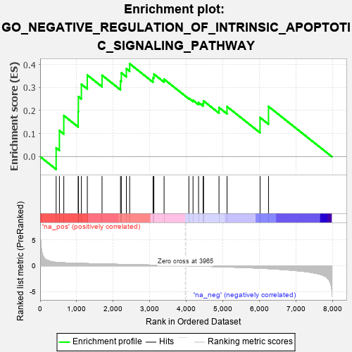
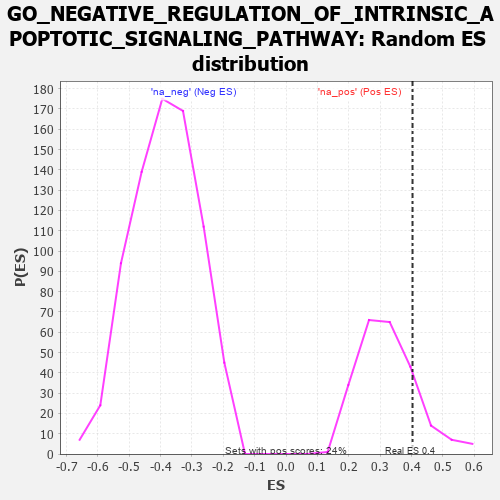

| | | Dataset | 7d |
| Phenotype | NoPhenotypeAvailable |
| Upregulated in class | na_pos |
| GeneSet | GO_NEGATIVE_REGULATION_OF_INTRINSIC_APOPTOTIC_SIGNALING_PATHWAY |
| Enrichment Score (ES) | 0.40306202 |
| Normalized Enrichment Score (NES) | 1.251233 |
| Nominal p-value | 0.16595745 |
| FDR q-value | 0.44511512 |
| FWER p-Value | 1.0 |
Table: GSEA Results Summary

Fig 1: Enrichment plot: GO_NEGATIVE_REGULATION_OF_INTRINSIC_APOPTOTIC_SIGNALING_PATHWAY
Profile of the Running ES Score & Positions of GeneSet Members on the Rank Ordered List
| PROBE | GENE SYMBOL | GENE_TITLE | RANK IN GENE LIST | RANK METRIC SCORE | RUNNING ES | CORE ENRICHMENT | | 1 | RRN3 | | | 438 | 0.667 | 0.0376 | Yes |
| 2 | HTRA2 | | | 527 | 0.621 | 0.1128 | Yes |
| 3 | NOC2L | | | 647 | 0.578 | 0.1782 | Yes |
| 4 | AKT1 | | | 1040 | 0.476 | 0.1950 | Yes |
| 5 | TAF9 | | | 1046 | 0.475 | 0.2604 | Yes |
| 6 | SRC | | | 1128 | 0.459 | 0.3140 | Yes |
| 7 | PARL | | | 1290 | 0.432 | 0.3537 | Yes |
| 8 | HYOU1 | | | 1692 | 0.358 | 0.3530 | Yes |
| 9 | ATAD5 | | | 2197 | 0.277 | 0.3281 | Yes |
| 10 | TRAP1 | | | 2219 | 0.274 | 0.3635 | Yes |
| 11 | MIF | | | 2357 | 0.252 | 0.3813 | Yes |
| 12 | KDM1A | | | 2447 | 0.237 | 0.4031 | Yes |
| 13 | HDAC1 | | | 3086 | 0.138 | 0.3420 | No |
| 14 | GPX1 | | | 3109 | 0.135 | 0.3581 | No |
| 15 | DDX3X | | | 3388 | 0.091 | 0.3358 | No |
| 16 | SFRP2 | | | 4065 | -0.018 | 0.2532 | No |
| 17 | PDX1 | | | 4179 | -0.038 | 0.2444 | No |
| 18 | OPA1 | | | 4330 | -0.065 | 0.2346 | No |
| 19 | SYVN1 | | | 4454 | -0.085 | 0.2310 | No |
| 20 | LRRK2 | | | 4467 | -0.087 | 0.2416 | No |
| 21 | CLU | | | 4889 | -0.174 | 0.2129 | No |
| 22 | MMP9 | | | 5108 | -0.227 | 0.2171 | No |
| 23 | XBP1 | | | 6011 | -0.475 | 0.1697 | No |
| 24 | VDAC2 | | | 6242 | -0.553 | 0.2175 | No |
Table: GSEA details [plain text format]

Fig 2: GO_NEGATIVE_REGULATION_OF_INTRINSIC_APOPTOTIC_SIGNALING_PATHWAY: Random ES distribution
Gene set null distribution of ES for GO_NEGATIVE_REGULATION_OF_INTRINSIC_APOPTOTIC_SIGNALING_PATHWAY